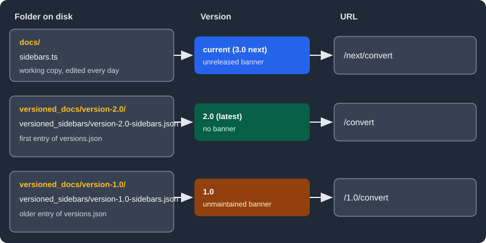

Versioning
|
This content was generated with the assistance of AI and should be verified against the official documentation before being relied on in production. |
This page was written against Docusaurus 3.10.2 (the last release of the 3.x line) and checked on 2026-10-26. It explains how the docs plugin freezes a copy of the documentation as a numbered version, which files and routes that creates, how to control which version is the default, how to hide or limit versions, and why a site should keep only a few of them. The running example is the documentation site of Pocket Units, the small units-conversion library with a C# and a Python implementation. A small site was built with Docusaurus 3.10.2 for this page and every command, error message and generated route below was read from its output.
What versioning is and why it exists
A versioned documentation site lets a reader of release 1.0 keep reading the pages that described release 1.0 while
the project moves on. Docusaurus does this by copying files, not by reading Git history: when you run a command, the
current contents of the docs folder are duplicated into a new folder, and from then on that folder is an independent
set of documents with its own sidebar and its own URLs.
This has costs that the official guide stresses. Every version is built, so build time and the size of the site grow. Every fix has to be repeated in each version it applies to, and contributors have to know which folder to edit. The guide recommends that most sites do not use versioning at all, and keeps it for sites with high traffic and rapid changes to the documentation between versions. A site whose documentation rarely changes, or that only documents the newest release, is better served without versions. The rest of this page assumes you decided that you need them.
Current, latest and the other versions
Two words describe different things and are easy to confuse.
-
The current version is defined by the file system: it is whatever is in the
docsfolder. The docs plugin gives it the namecurrent. By default its label is Next, and it is served under the pathnext. -
The latest version (also called the last version) is defined by navigation: it is the version that navbar items and the plugin root link to, and by default it is served at the root of the docs route, with no version segment. It is the first entry of
versions.json.
With the default configuration they are different versions: the current folder holds work in progress for the next
release (served under next) and the newest frozen version is the one most readers see. The configuration can also make
them the same version, as described in Choosing the latest version.
The folder layout
After the first version is created, a site has the following layout. The docs and sidebars file belong to the current
version, each folder under versioned_docs is a frozen version, and versions.json is the list that ties them together.
website/
docs/ current version
sidebars.ts sidebar of the current version
versions.json version names, newest first
versioned_docs/
version-2.0/ frozen documents of 2.0
version-1.0/ frozen documents of 1.0
versioned_sidebars/
version-2.0-sidebars.json frozen sidebar of 2.0
version-1.0-sidebars.json

The figure shows how each folder maps to a version and a URL when the docs are served at the site root, as in the
example of this page. By default the docs are served under a docs route base path, so the URLs gain a leading
/docs. The versions.json file is a plain JSON array of version names ordered from newest to oldest; the plugin treats
its first entry as the latest version unless lastVersion says otherwise. When the docs plugin is registered more than
once with an id, the folders and the file are prefixed with that id (for example community_versioned_docs); the
default plugin has no prefix.
Creating a version with docs:version
The command takes one required argument, the version name:
npx docusaurus docs:version 1.0Source: Docusaurus docs: Versioning
Before running it, make sure the docs folder is in the state that should be frozen. The command does three things:
-
copies the full contents of
docsintoversioned_docs/version-<name>; -
writes the sidebar that is configured at that moment into
versioned_sidebars/version-<name>-sidebars.json; -
adds the name at the top of
versions.json.
In the Pocket Units example the first release documented lengths. The current documents were docs/intro.md and
docs/convert.md, and the sidebar was a single autogenerated category:
import type {SidebarsConfig} from '@docusaurus/plugin-content-docs';
const sidebars: SidebarsConfig = {
docs: [{type: 'autogenerated', dirName: '.'}],
};
export default sidebars;Running the command printed one line and created three paths:
npx docusaurus docs:version 1.0[SUCCESS] [docs]: version 1.0 created!versioned_docs/version-1.0/convert.md
versioned_docs/version-1.0/intro.md
versioned_sidebars/version-1.0-sidebars.json
versions.jsonSource: Docusaurus docs: Versioning
The versioned sidebar file is the same sidebar written as JSON. Because the sidebar is autogenerated, it keeps working
inside the version folder, where dirName: '.' is relative to the content root of that version:
{
"docs": [
{
"type": "autogenerated",
"dirName": "."
}
]
}Source: Docusaurus docs: Versioning
The version 2.0 release added mass conversion. After editing docs/intro.md and adding docs/mass.md, a second run
froze the new state. The versions.json file then read, newest first:
[
"2.0",
"1.0"
]Source: Docusaurus docs: Versioning
Further edits of docs (here a line about temperatures under development) now belong to the current version and do not
change either frozen copy.
Errors of the command
The command validates its input. These were the messages observed:
| Situation | Result |
|---|---|
Name already in |
|
Name containing a slash ( |
|
No argument |
|
The command did not reject the name current: running it created a version with that name, which is also the name the
plugin uses for the docs folder, so avoid it. A name is any string without slashes; semantic versions such as 1.0.0
and short names such as 2.0 both work, and the name becomes the default URL segment and label.
Several docs plugin instances
If the site registers an additional docs plugin with an id, the command has an id-suffixed form,
docs:version:<id>, and the folders it uses are prefixed with the id. This page does not run a second instance; see
Plugins and presets for how plugin ids work.
Editing, adding and deleting versions
Each folder in versioned_docs is served by its own routes, so changing a file there affects only that version. This is
how a typo in release 1.0 is fixed after 2.0 has shipped: edit the file under versioned_docs/version-1.0, commit and
publish.
-
To add a document to a frozen version, create the file in its version folder and add the reference to the matching file in
versioned_sidebars. Sidebar paths in a versioned file are relative to the content root of that version. -
To add a document to the current version, put it in
docsand reference it fromsidebars.ts(or let the autogenerated sidebar find it). -
To delete a version, remove its entry from
versions.json, delete itsversioned_docsfolder and delete itsversioned_sidebarsfile. All three steps are needed.
A versioned sidebar that points to a document the version does not contain stops the build. With the sidebar of version
1.0 edited to list a mass document that only exists from 2.0 on, the build reported:
[ERROR] Loading of version failed for version 1.0
Error: Invalid sidebar file at "versioned_sidebars/version-1.0-sidebars.json".
These sidebar document ids do not exist:
- mass
Available document ids are:
- convert
- introSource: Docusaurus docs: Versioning
Configuring the versions
All of the options below belong to the docs plugin and can be set in the preset options (the usual place) or in the
plugin options. The Pocket Units site serves the docs at the root with routeBasePath: '/', so the URLs are short.
| Option | Default | Meaning |
|---|---|---|
|
First entry of |
The version navbar items and the docs root link to, and the one served without a version segment. |
|
|
Whether the |
|
All versions |
A subset of the names in |
|
|
Ignore the frozen versions and publish only the current one. It is an error together with |
|
|
A map from version name to per-version options. |
The per-version options inside versions are these:
| Key | Meaning |
|---|---|
|
Text shown in the dropdown, badge and banner. |
|
Route segment of the version, appended to the base URL and the route base path. By default the latest version has none and |
|
|
|
Show a badge with the version label at the top of each page of the version. |
|
Ask search engines not to index the version. |
|
Extra class on the |
Source: Docusaurus docs: docs plugin API
A configuration that labels the unreleased work as 3.0, marks the old release as unmaintained and keeps it out of search engines looks like this:
import type {Config} from '@docusaurus/types';
import type * as Preset from '@docusaurus/preset-classic';
const config: Config = {
title: 'Pocket Units',
url: 'https://docs.example.com',
baseUrl: '/',
onBrokenLinks: 'throw',
presets: [
[
'classic',
{
docs: {
routeBasePath: '/',
sidebarPath: './sidebars.ts',
versions: {
current: {label: '3.0 (next)', banner: 'unreleased'},
'1.0': {banner: 'unmaintained', noIndex: true},
},
},
blog: false,
} satisfies Preset.Options,
],
],
themeConfig: {
navbar: {
title: 'Pocket Units',
items: [{type: 'docsVersionDropdown', position: 'right'}],
},
} satisfies Preset.ThemeConfig,
};
export default config;Source: Docusaurus docs: Versioning
The build produced these routes (a page of the current version, the latest version and the old one):
build/index.html 2.0, the latest version, at the root
build/convert/index.html
build/mass/index.html
build/next/index.html current, labelled 3.0 (next)
build/next/convert/index.html
build/next/mass/index.html
build/1.0/index.html frozen 1.0, with the unmaintained banner
build/1.0/convert/index.htmlIn the generated HTML the banner of version 1.0 says that it is documentation for Pocket Units 1.0, no longer actively
maintained, and links to the latest version (2.0). The banner of the current version says that it is unreleased
documentation for 3.0 (next) and links to the latest version as well. The latest version shows no banner. A version
setting noIndex: true adds a robots meta tag with noindex, nofollow to its pages and removes its routes from the
generated sitemap: the sitemap of the example listed the root and next routes but none under /1.0/.
The badge option is shown on each page of a version; in the example site every version already displayed a badge
(for instance Version: 2.0 on the latest) because more than one version existed, so set it explicitly only when you
want to control it. The className option put the given class on the html element, next to the classes the theme
adds, which makes per-version CSS possible.
Choosing the latest version
The default, where the frozen 2.0 is the latest and docs is Next, fits a project that releases 2.0 and starts working
on 3.0 straight away. A project that releases 1.0 and will maintain it for a while before starting on 2.0 can avoid
keeping the same content in two folders by pretending that the current version is the cut one. Set lastVersion to
current and give the current version a label:
docs: {
routeBasePath: '/',
sidebarPath: './sidebars.ts',
lastVersion: 'current',
versions: {
current: {label: '3.0'},
},
},Source: Docusaurus docs: Versioning
With that setting the docs folder was served at the site root and the frozen versions moved to their own segments:
build/index.html current, now the latest version
build/convert/index.html
build/mass/index.html
build/2.0/index.html frozen 2.0
build/2.0/convert/index.html
build/2.0/mass/index.html
build/1.0/index.html frozen 1.0
build/1.0/convert/index.htmlThis suits a project whose docs folder tracks one major version that is constantly patched. Because the root route is now
taken by the current version, a link to / keeps working. A first attempt that also gave the current version the path
next while making it the latest left nothing at the root, and the build then failed with broken links to / (the
navbar logo) because onBrokenLinks was throw.
Limiting the built versions
The onlyIncludeVersions option is a list of names. Besides frozen versions it accepts current. The official guide
suggests limiting a development server or a deploy preview to two or three versions to shorten startup and build time.
With ['current', '2.0'] the example built the root (2.0) and next and skipped 1.0 completely: the dropdown listed
only 3.0 (next) and 2.0, and no /1.0/ route existed.
If the latest version is not in the list, Docusaurus picks another one. With ['current', '1.0'] the root of the
site served version 1.0, because the first included frozen version became the latest. Writing both options so that they
disagree is rejected:
Invalid docs option "lastVersion": if you use both the "onlyIncludeVersions" and
"lastVersion" options, then "lastVersion" must be present in the provided "onlyIncludeVersions" array.With ['current'] only, the current documents became the root of the site, which is a convenient state for writing.
A common pattern is to turn the option on from an environment variable, so the full site still builds in continuous
integration:
// Build only the unreleased docs while writing: DOCS_FAST=1 npm run start
const fast = process.env.DOCS_FAST === '1';
// inside the preset options:
docs: {
routeBasePath: '/',
sidebarPath: './sidebars.ts',
onlyIncludeVersions: fast ? ['current'] : undefined,
},Source: Docusaurus docs: docs plugin API
Both modes were built: the full build produced the eight routes listed earlier, and DOCS_FAST=1 produced only index,
convert and mass at the root.
includeCurrentVersion: false publishes only the frozen versions. In the example the build then had 2.0 at the root and
1.0 under /1.0/ and no next routes, and the dropdown listed 2.0 and 1.0. If the versions option still describes
current, the build stops with Invalid docs option "versions": unknown versions (current) found. Available version
names are: 2.0, 1.0, so remove that entry at the same time.
The version dropdown
The classic theme provides the navbar item types docsVersionDropdown (a dropdown of all versions) and docsVersion
(a link to the version being browsed). They choose the target in order: the version of the page the reader is on, then
the version the reader last viewed, then the latest version. When switching versions from the dropdown, the reader stays
on the same document as long as its ID exists in the other version, which is another reason to keep document IDs stable.
The dropdown accepts these fields:
| Field | Meaning |
|---|---|
|
|
|
An array of names to show in a given order, or an object mapping a name to |
|
Extra link items at the start or end of the list. |
|
Do not mark the item as active while browsing docs. |
|
The id of the docs plugin the versions belong to ( |
The dropdownItemsAfter field is the supported way to link versions that are no longer built, such as an archived copy
of an old release hosted elsewhere:
items: [
{
type: 'docsVersionDropdown',
position: 'right',
dropdownItemsAfter: [
{href: 'https://archive.example.com/pocket-units/0.9/', label: '0.9 (archive)'},
],
},
],In the example the full build rendered the entries 3.0 (next), 2.0, 1.0 and 0.9 (archive), and the DOCS_FAST=1 build
rendered 3.0 (next) and 0.9 (archive). The dropdown is generated from the versions that are built, not from
versions.json, so hiding a version with onlyIncludeVersions also hides it from the dropdown.
Keeping versions few
The official guide gives practical rules that follow from the file-copy model.
-
Version only when the documentation really differs. A patch release that fixes a bug does not change what the docs say, so cutting 1.0.1 after 1.0.0 only duplicates files. Semantic versioning says patch releases add no features, so version at the minor or major level at most.
-
Keep the number of versions below about ten. Old versions nobody reads still cost build time and maintenance. The guide cites the Jest site, which maintains only the latest few versions of its documentation.
-
Archive instead of keeping everything. A host that stores each production build under an immutable URL (the guide names Netlify as an example) lets you link an old version from the dropdown with
dropdownItemsAfterand remove it fromversions.json. Docusaurus' own site lists archived versions this way. -
Link documents by relative file path with the extension, for example
[the conversion guide](./convert.md), so that Docusaurus resolves the link to the matching version. Themasspage of the example linked toconvert.mdthis way and the link resolved insidenext, the root and the frozen copy; withonBrokenLinks: 'throw'a link that cannot be resolved in one version fails the build. -
Import shared React components with the
@sitealias (@site/src/components/Foo) rather than a relative path, because the nesting level of a document changes when it is copied underversioned_docs. -
Decide whether assets are per version or shared. Assets that must match a version live next to its documents and are referenced with relative paths. Global assets live in
staticand are referenced with absolute paths.
Search and versions
With Algolia DocSearch the theme option contextualSearch is on by default and restricts results to the current locale
and version. See Search for the setup. Without contextual search a
reader of 2.0 sees matches from every version, which are often near duplicates.
Versions and translations
Each version is translated separately: the French copy of version 1.0 lives under the i18n folder and has to be kept
in step with the English one, so every extra version multiplies the translation work. See
Internationalization for the folder layout.
Version snapshots
The figure above shows where files live. The diagram below shows what happens over time: every run of the
command copies the state of docs at that moment, and later edits go to docs only.
In the diagram the solid arrows show the history of the working copy and the copies made by the command, and the dashed loop shows that a frozen version is edited in place. The three versions together make the site.
Pitfalls and version notes
| Symptom | Cause and fix |
|---|---|
A new feature appears only in Next |
The page was edited in |
A fix must be applied several times |
Each version is a separate copy. Edit each affected folder, or keep fewer versions. |
The build fails after a sidebar change in a frozen version |
The versioned sidebar names a document ID the version does not contain. Compare it with the files in that version folder. |
Imports break after versioning |
Relative imports changed depth when copied into |
Root of the site is a 404 |
The latest version was given a |
Old versions appear in search engines |
Set |
Edit links point to the wrong place |
Edit links of frozen pages lead to the old file. Set |
The behaviour above was observed with 3.10.2, the last release of the 3.x line.